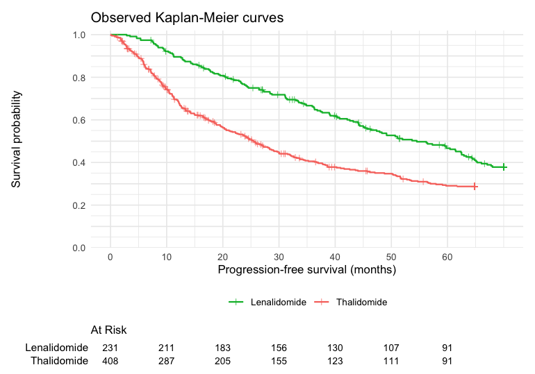
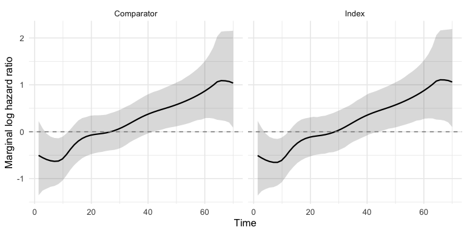
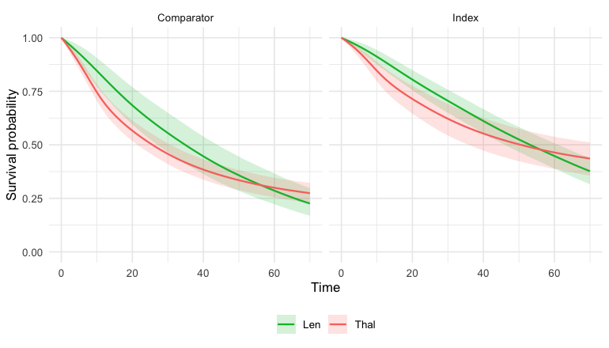
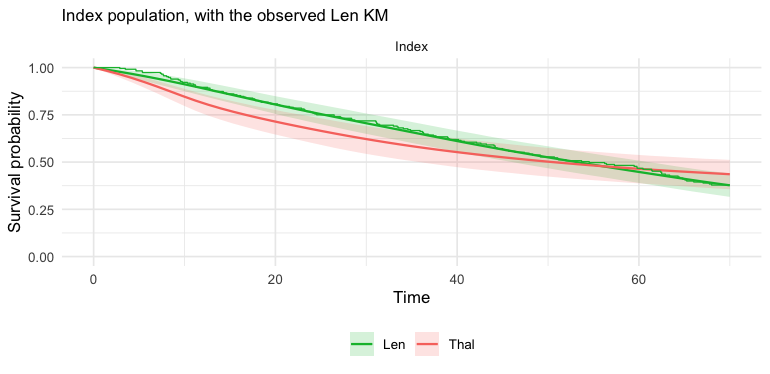
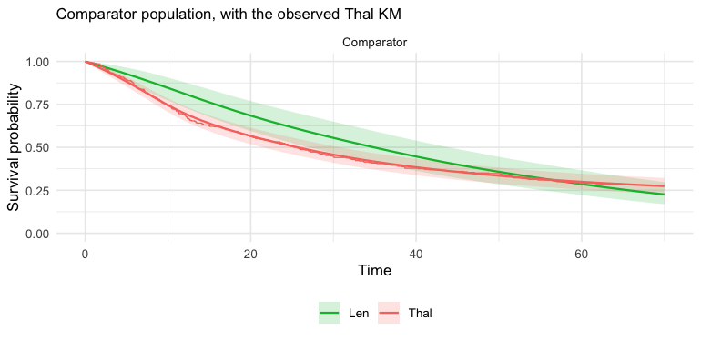
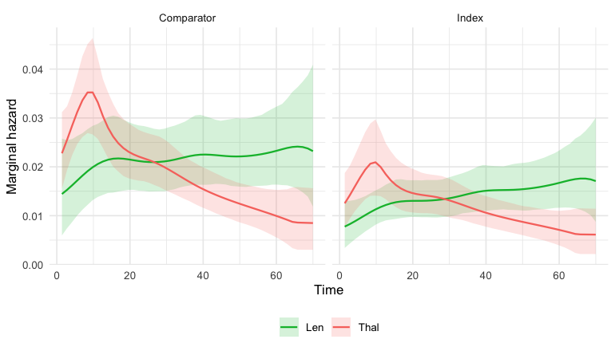
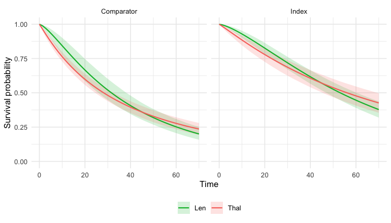

This vignette is a complete worked example of an
unanchored indirect comparison for a
time-to-event endpoint, using newly-diagnosed multiple
myeloma (NDMM) data bundled with mlumr (ndmm_ipd /
ndmm_agd / ndmm_agd_covs, copied from the
GPL-3 multinma package (Phillippo 2024)); these are the same
datasets used in multinma’s survival ML-NMR example (Phillippo et al.
2025). It is the unanchored analogue of that analysis (C. Chandler and Ishak
2026). See vignette("data-preparation") for the
integration machinery, vignette("fitting-and-diagnostics")
for sampler/prior detail, and vignette("choosing-a-method")
to choose between methods.
About these data.
ndmm_ipd/ndmm_agd/ndmm_agd_covsare copied verbatim frommultinma; they were not re-simulated for mlumr. multinma’s IPD is itself simulated to resemble the published trials, and its aggregate arms are pseudo-IPD reconstructed from digitized Kaplan-Meier curves (Leahy and Walsh 2019). mlumr bundles one arm from each trial: lenalidomide from McCarthy2012 (IPD) and thalidomide from Morgan2012 (reconstructed pseudo-IPD). Both trials also randomized patients to placebo, and those arms are deliberately omitted here. Keeping them would connect the two trials through a common comparator and make an anchored comparison possible, which is not the problem this vignette is about. The unanchored framing is a construction for illustration; the section Checking against the anchored comparison below puts the omitted arms back to use.The index arm is McCarthy2012 lenalidomide rather than the other candidate, Palumbo2014: its patients are closer to the Morgan2012 population, which is what an unanchored comparison depends on.
The unanchored survival problem
In an unanchored comparison of two single-arm studies we have individual patient data (IPD) for the index treatment and only published, aggregate evidence for the comparator. For survival endpoints that evidence is almost always a Kaplan-Meier (KM) curve plus a baseline-characteristics table.
mlumr handles this exactly as for its other families: the comparator arm is represented by reconstructed pseudo-IPD, event/censoring times digitized from the published KM curve (e.g. with the Guyot algorithm), and the model integrates the individual-level survival likelihood over the comparator’s covariate distribution, transporting the index-derived survival model to the comparator (or any) population. The unanchored setting removes the need for a common arm but still relies on conditional constancy / the shared-prognostic-factor assumption (SPFA).
The ML-UMR survival model
For a proportional-hazards distribution ML-UMR models the individual
hazard h(t\mid
x)=h_0(t)\exp(\mu_k+x^\top\beta_k), with a parametric or M-spline
baseline h_0(t);
accelerated-failure-time distributions instead scale time by \exp(\mu_k+x^\top\beta_k). The index IPD
enters through the usual survival likelihood; the comparator’s
reconstructed pseudo-IPD contributes a likelihood integrated
over its covariate distribution f_{\text{AgD}}(x), \ell_{\text{AgD}}=\sum_j\log\!\int h(t_j\mid
x)^{\delta_j}\,S(t_j\mid x)\,f_{\text{AgD}}(x)\,dx, approximated
by the quasi-Monte Carlo integration points. Population-standardized
quantities follow from the marginal survival \bar S(t)=\mathbb{E}_x[S(t\mid x)] and
marginal hazard \bar h(t)=\mathbb{E}_x[h(t\mid
x)S(t\mid x)]/\mathbb{E}_x[S(t\mid x)]. Because hazard ratios are
non-collapsible, the marginal log HR is time-varying
even under conditional PH, so we report it as a curve
(predict(type = "loghr")) and lean on the collapsible RMST
estimands for scalar summaries.
Survival distributions
The distribution argument of mlumr()
selects the survival model, nine parametric forms (proportional hazards,
PH; or accelerated failure time, AFT) plus two flexible baselines:
distribution |
Family | Treatment effect |
|---|---|---|
"exponential", "weibull" (default),
"gompertz"
|
PH | hazard ratio |
"exponential-aft", "weibull-aft",
"lognormal", "loglogistic",
"gamma", "gengamma"
|
AFT | time ratio only when the baseline shape and the coefficient vector are both shared; otherwise the exponentiated linear-predictor contrast |
"mspline" |
Flexible M-spline baseline (PH) | hazard ratio |
"pexp" |
Piecewise-exponential baseline (PH) | hazard ratio |
marginal_effects() reports these on the natural scale,
null 1, as for the Poisson rate ratio. For AFT distributions a
population time ratio requires both a shared baseline shape and a shared
coefficient vector; under the default aux_by = ".study", or
under the relaxed model, marginal_effects() reports
EXP_DELTA_ETA instead and an explicit request for
"tr" is an error. predict(type = "loghr")
gives the time-varying marginal log hazard ratio curve (null 0). The
"gengamma" form is the generalized gamma restricted to
positive Lawless shape Q
(Q = 1 / sqrt(aux2) > 0); it nests the Weibull, gamma,
and (as a limit) log-normal, but does not cover negative-Q
shapes (use an "mspline" baseline for a hazard shape
outside that family).
The flexible baselines estimate the baseline-hazard shape from the
data using a normalized M-spline (the piecewise exponential is the
degree-0 case) with a random-walk smoothing prior (Phillippo et al.
2026). Knots are placed by make_knots() (control
with n_knots).
Censoring
Outcomes are given to set_ipd() /
set_agd_surv() either as a survival::Surv()
object or as time / status /
entry_time columns. All standard schemes are supported
(internally mapped to status 0 right, 1 event,
2 left, 3 interval; delayed entry handled as
left truncation):
The data: progression-free survival in NDMM
-
Index (IPD). Patient-level progression-free
survival for lenalidomide (
Len) maintenance from the McCarthy2012 study. -
Comparator (AgD). A reconstructed KM curve plus
covariate moments for thalidomide (
Thal) from the Morgan2012 study.
We adjust for age, ISS stage III, complete/very-good-partial response, and sex.
library(mlumr)
library(ggplot2)
data("ndmm_ipd") # bundled with mlumr (copied from multinma, GPL-3)
data("ndmm_agd") # reconstructed pseudo-IPD (KM)
data("ndmm_agd_covs") # covariate moments for the AgD arm
covs <- c("age", "iss_stage3", "response_cr_vgpr", "male")
# Index IPD: McCarthy2012, lenalidomide. Age stays in years, as in multinma's
# own NDMM example, so the coefficient reads as a per-year log hazard ratio.
ipd_one <- ndmm_ipd[ndmm_ipd$study == "McCarthy2012" & ndmm_ipd$treatment == "Len", ]
# Comparator AgD: Morgan2012, thalidomide (pseudo-IPD + covariate moments).
agd_one <- ndmm_agd[ndmm_agd$study == "Morgan2012" & ndmm_agd$treatment == "Thal", ]
cv <- ndmm_agd_covs[ndmm_agd_covs$study == "Morgan2012" & ndmm_agd_covs$treatment == "Thal", ]
agd_one$age_mean <- cv$age_mean
agd_one$age_sd <- cv$age_sd
agd_one$iss_stage3_prop <- cv$iss_stage3_prop # proportions (binary covariates)
agd_one$response_cr_vgpr_prop <- cv$response_cr_vgpr_prop
agd_one$male_prop <- cv$male_propCovariate balance
Population adjustment is motivated by the fact that the two single-arm populations differ on prognostic factors. Comparing the index sample means against the published comparator means shows the imbalance we must adjust for:
balance <- data.frame(
Covariate = c("Age (years)", "ISS stage III (prop.)",
"CR/VGPR response (prop.)", "Male (prop.)"),
Index_Len = c(mean(ipd_one$age), mean(ipd_one$iss_stage3),
mean(ipd_one$response_cr_vgpr), mean(ipd_one$male)),
Comparator_Thal = c(agd_one$age_mean[1], agd_one$iss_stage3_prop[1],
agd_one$response_cr_vgpr_prop[1], agd_one$male_prop[1])
)
knitr::kable(balance, caption = "Prognostic-factor balance: McCarthy2012 Len vs Morgan2012 Thal")| Covariate | Index_Len | Comparator_Thal |
|---|---|---|
| Age (years) | 57.9334459 | 65.5938658 |
| ISS stage III (prop.) | 0.2727273 | 0.3186275 |
| CR/VGPR response (prop.) | 0.6233766 | 0.7450980 |
| Male (prop.) | 0.5238095 | 0.6151961 |
The observed Kaplan-Meier curves (index IPD and the reconstructed comparator pseudo-IPD) show the crude, unadjusted survival difference:
km_obs <- rbind(
data.frame(eventtime = ipd_one$eventtime, status = ipd_one$status,
arm = "Lenalidomide"),
data.frame(eventtime = agd_one$eventtime, status = agd_one$status,
arm = "Thalidomide")
)
# The displayed observed curves use ggsurvfit: step lines with censoring marks
# and a numbers-at-risk table, the standard survival-reporting layout. (The
# predicted-vs-observed overlay further down draws its KM with mlumr's geom_km().)
arm_cols <- c("Lenalidomide" = "#00BA38", # green (index)
"Thalidomide" = "#F8766D") # red (comparator)
ggsurvfit::survfit2(survival::Surv(eventtime, status) ~ arm, data = km_obs) |>
ggsurvfit::ggsurvfit(linewidth = 0.7) +
ggsurvfit::add_censor_mark(shape = 3, size = 1.6, alpha = 0.7) +
ggsurvfit::add_risktable(risktable_stats = "n.risk", size = 3.2) +
scale_color_manual(values = arm_cols) +
scale_fill_manual(values = arm_cols) +
scale_x_continuous(breaks = seq(0, 60, 10)) +
scale_y_continuous(
breaks = seq(0, 1, 0.1), # gridline at every 0.1
labels = function(b) ifelse(round(b * 10) %% 2 == 0, # label 0, 0.2, .., 1
sprintf("%.1f", b), ""),
limits = c(0, 1), expand = expansion(mult = c(0, 0.02))) +
labs(x = "Progression-free survival (months)", y = "Survival probability",
title = "Observed Kaplan-Meier curves") +
theme_minimal(base_size = 11) + theme(legend.position = "bottom")
plot of chunk km
Setting up the ML-UMR data
The index IPD uses family = "survival" with
time/status columns; the comparator uses
set_agd_surv(), which takes the
reconstructed pseudo-IPD plus the covariate moments from the
baseline table.
ipd <- set_ipd(ipd_one, treatment = "treatment", covariates = covs,
family = "survival", time = "eventtime", status = "status")
agd <- set_agd_surv(agd_one, treatment = "treatment",
time = "eventtime", status = "status",
cov_means = c("age_mean", "iss_stage3_prop", "response_cr_vgpr_prop", "male_prop"),
cov_sds = c("age_sd", NA, NA, NA),
cov_types = c("continuous", "binary", "binary", "binary"))
dat <- suppressWarnings(combine_data(ipd, agd))
dat <- suppressWarnings(add_integration(
dat, n_int = 64,
# Age is right-skewed, so a gamma marginal, matching multinma's NDMM example.
age = distr(qgamma, mean = age_mean, sd = age_sd),
iss_stage3 = distr(qbern, prob = iss_stage3_mean),
response_cr_vgpr = distr(qbern, prob = response_cr_vgpr_mean),
male = distr(qbern, prob = male_mean)))
dat
#> Unanchored Comparison Data (Time-to-event)
#> ====================================
#>
#> Index treatment (IPD): Len
#> N = 231
#> Events = 133 (57.6%), censored = 98
#>
#> Comparator treatment (AgD): Thal
#> Reconstructed pseudo-IPD: 408 row(s)
#> Events = 263 (64.5%), censored = 145
#>
#> Covariates ( 4 ): age, iss_stage3, response_cr_vgpr, male
#> Integration points: 64 (QMC with Gaussian copula)Frequentist benchmarks
The naive comparison is an unadjusted Cox model (a
log hazard ratio), ignoring the covariate imbalance. Survival
STC fits a parametric model to the index IPD and
transports it to the comparator population by G-computation, returning a
restricted-mean-survival-time (RMST) difference via
flexsurv. Both are fast frequentist reference points for
the Bayesian fit below (the two estimands, log HR and RMST difference,
are on different scales, so each is compared like for like later).
RMST is an integral to a restriction time, so two RMST differences
computed to different horizons are different estimands and must not be
placed side by side. The defaults do not agree by construction: a
stratified flexible baseline defaults to the follow-up both studies
observed, because each study’s baseline is extrapolated as a constant
hazard past its own last event, whereas a parametric fit and
stc() default to the pooled maximum. We therefore fix one
horizon here and pass it to every estimator below.
# The follow-up both arms in THIS analysis actually observed, taken from the two
# subsets that were combined above rather than from the full bundled datasets.
# Every RMST estimate in this vignette is integrated to this time, so the forest
# plot compares like with like.
tau_rmst <- min(max(ipd_one$eventtime), max(agd_one$eventtime))
tau_rmst
#> [1] 64.8
res_naive <- naive(dat) # unadjusted Cox log HR
res_stc <- stc(dat, distribution = "weibull", seed = 2026,
rmst_horizon = tau_rmst) # G-computation RMST diff
res_naive
#> Naive Unadjusted Indirect Comparison
#> =====================================
#>
#> Treatments: Len vs Thal
#>
#> Population basis: index-study outcome versus comparator-population outcome; no common standardized target.
#>
#> Median survival:
#> Index (IPD): 54.526 (133 events / 231)
#> Comparator (AgD): 25.499 (263 events / 408)
#>
#> Log Hazard Ratio (Cox): -0.5541 (SE: 0.1087)
#> 95% CI: [-0.7672, -0.3410]
#>
#> All effect measures (95% CI):
#> Log hazard ratio (Cox) -0.5541 (SE 0.1087) [-0.7672, -0.3410]
#> Hazard ratio (Cox) 0.5746 [0.4643, 0.7111]
res_stc
#> Simulated Treatment Comparison (G-computation)
#> ===============================================
#>
#> Treatments: Len vs Thal
#>
#> Estimand population: comparator
#> Treating this as the index-population effect requires a separate effect-equality assumption; this calculation does not transport to the index population.
#>
#> Method note: package-specific parametric survival extension.
#> Distribution: weibull | RMST horizon: 64.800
#> Marginalized RMST (index trt, comp pop): 36.8432
#> Fitted RMST (comp trt, comp pop): 33.6594
#>
#> RMST Difference: 3.1837 (bootstrap SE: 2.6586, 200 reps)
#> 95% CI: [-2.0271, 8.3946]
#>
#> All effect measures (95% CI):
#> RMST difference 3.1837 (SE 2.6586) [-2.0271, 8.3946]
#> Log cumulative-hazard ratio (at horizon) 0.0461 (SE 0.1222) [-0.1935, 0.2857]
#> Cumulative-hazard ratio (at horizon) 1.0472 [0.8241, 1.3306]Fitting the ML-UMR models
Following multinma’s NDMM survival example, the primary model uses a
cubic M-spline baseline hazard
(distribution = "mspline", mspline_degree = 3
by default) with seven internal knots placed at event-time quantiles,
adjusting for all four prognostic factors. We fit the shared-effect
(SPFA) model and, mirroring multinma’s
~ (covariates) * .trt interaction specification, a
relaxed model that lets the prognostic effects differ
by treatment (effect modification). A Weibull proportional-hazards model
is fit alongside as a parametric comparison. The settings (64
integration points, 4 chains of 2000 iterations, cubic M-spline with 7
internal knots) match multinma’s NDMM example. prior_aux
(shape/scale) and prior_smooth (M-spline smoothing SD)
supplement the usual priors; see
vignette("fitting-and-diagnostics").
The baseline hazard is estimated separately for each
study (aux_by = ".study", the default), as in
multinma, where .study is always part of the
stratification. Two single-arm trials rarely share a hazard shape, and
forcing one on them would impose proportional hazards across
studies, which nothing in an unanchored design supports; a shared shape
is available as aux_by = "none" when the two Kaplan-Meier
curves plainly agree. (As in multinma, aux_by = NULL also
means a baseline per study, so "none" is a mlumr-specific
spelling for a model multinma cannot fit.) Identification survives
because each study gets its own knots over its own observed
support (as in multinma’s default
type = "quantile") and its spline coefficients are a
simplex, which pins that study’s cumulative hazard to 1 at a time the
study actually observed. Both halves matter: a single pooled basis
spanning the longer study would leave the shorter one with basis
functions it never observes, and the likelihood would then be exactly
flat along a direction that trades the spline scale against the study
intercept.
One consequence matters for reading everything below. The marginal
hazard ratio is time-varying in any case, because it weights
the covariate distribution by each arm’s own survival and the two risk
sets diverge; with two baseline shapes it additionally picks up the
ratio of the baselines. So the scalar hazard ratio is only its value at
one instant, and marginal_effects() records which one in an
at_time column: the first prediction time
here, since the prediction grid excludes zero. Changing
pred_times moves that number, which is why it should never
be read as “the” hazard ratio. predict(type = "loghr")
gives the whole curve, and the RMST difference is the estimand
that does not depend on when you look.
# Primary: cubic M-spline baseline (the multinma NDMM survival model)
fit_mspline <- mlumr(dat, model = "spfa", distribution = "mspline", n_knots = 7,
rmst_horizon = tau_rmst,
chains = 4, iter = 2000, warmup = 1000, seed = 2026, refresh = 0)
#> Running MCMC with 4 parallel chains...
#>
#> Chain 1 finished in 346.3 seconds.
#> Chain 3 finished in 355.9 seconds.
#> Chain 4 finished in 361.9 seconds.
#> Chain 2 finished in 410.9 seconds.
#>
#> All 4 chains finished successfully.
#> Mean chain execution time: 368.8 seconds.
#> Total execution time: 411.0 seconds.
# Relaxed M-spline: treatment-specific prognostic effects (effect modification),
# the unanchored analogue of multinma's ~ (covariates) * .trt. beta_comparator is
# identified only by the reconstructed comparator likelihood, so we regularize it
# with a tighter autoscaled prior (see the caveat at the end of this vignette).
fit_mspline_relaxed <- mlumr(dat, model = "relaxed", distribution = "mspline",
n_knots = 7, rmst_horizon = tau_rmst,
prior_beta_comparator = prior_normal(0, 1, autoscale = TRUE),
chains = 4, iter = 2000, warmup = 1000, seed = 2026,
refresh = 0)
#> Running MCMC with 4 parallel chains...
#>
#> Chain 4 finished in 508.3 seconds.
#> Chain 3 finished in 528.7 seconds.
#> Chain 1 finished in 537.7 seconds.
#> Chain 2 finished in 539.5 seconds.
#>
#> All 4 chains finished successfully.
#> Mean chain execution time: 528.5 seconds.
#> Total execution time: 539.7 seconds.
# Parametric comparison: Weibull proportional hazards
fit_weibull <- mlumr(dat, model = "spfa", distribution = "weibull",
rmst_horizon = tau_rmst,
chains = 4, iter = 2000, warmup = 1000, seed = 2026, refresh = 0)
#> Running MCMC with 4 parallel chains...
#>
#> Chain 2 finished in 380.7 seconds.
#> Chain 3 finished in 390.1 seconds.
#> Chain 1 finished in 402.2 seconds.
#> Chain 4 finished in 424.2 seconds.
#>
#> All 4 chains finished successfully.
#> Mean chain execution time: 399.3 seconds.
#> Total execution time: 424.6 seconds.
summary(fit_mspline)
#> ML-UMR Model Summary
#> ====================
#>
#> Model: SPFA
#> Family: Time-to-event [mspline]
#> Link: log
#> Engine: cmdstanr
#> Treatments: Len (IPD) vs Thal (AgD)
#>
#> MCMC Diagnostics:
#> Divergent transitions: 0
#> Max treedepth hits: 0
#> Max Rhat: 1.004
#> Min ESS: 1362
#>
#> Intercepts (log scale):
#> variable mean sd 2.5% 97.5% Rhat
#> mu_index 0.3281011 0.11884905 0.09361807 0.5631807 1.002906
#> mu_comparator 0.1055319 0.08304143 -0.06503476 0.2714046 1.002169
#>
#> Regression Coefficients:
#> variable mean sd 2.5% 97.5% Rhat
#> beta[age] 0.06957188 0.01623353 0.03879512 0.1016364 0.9997473
#> beta[iss_stage3] 0.40568588 0.18803654 0.03662400 0.7635252 1.0010477
#> beta[response_cr_vgpr] 0.05911517 0.18257397 -0.30641058 0.4168000 0.9997620
#> beta[male] 0.07474996 0.17650989 -0.28177263 0.4189003 1.0013708
#>
#> Baseline hazard: stratified by study (aux_by = ".study")
#>
#> Shape / smoothing parameters:
#> variable mean sd 2.5% 97.5% Rhat
#> sigma_smooth[1] 1.002922 0.4929140 0.2720435 2.157771 1.001996
#> sigma_smooth[2] 1.237045 0.4891222 0.4424602 2.320887 1.002684
#>
#> Marginal Treatment Effects:
#> Log Hazard Ratios at t = 1.4:
#> variable mean sd 2.5% 97.5%
#> delta_index -0.5078045 0.4148139 -1.360514 0.2311852
#> delta_comparator -0.5047796 0.4122004 -1.354498 0.2275372
#> RMST Differences (to t = 64.8):
#> variable mean sd 2.5% 97.5%
#> rmst_diff_index 3.062956 2.468774 -1.696101 8.050058
#> rmst_diff_comparator 3.910061 2.668505 -1.280590 9.304018Priors
Beyond the usual intercept/coefficient priors, survival models add
prior_aux (shape/scale parameters) and, for flexible
baselines, prior_smooth (the M-spline random-walk smoothing
SD). prior_summary() shows exactly what was passed to
Stan:
prior_summary(fit_mspline)
#> Priors for ML-UMR Fit
#> =====================
#>
#> Intercepts (mu_index, mu_comparator):
#> normal(0, 10)
#> (package default, mlumr 0.1.0.9000)
#>
#> Regression coefficients (beta):
#> normal(0, 2.5) applied to all 4 covariate(s)
#> (package default, mlumr 0.1.0.9000)
#>
#> Survival baseline smoothing (random-walk SD, half-distribution via <lower=0>):
#> normal(0, 1)
#> (package default, mlumr 0.1.0.9000)The posterior intercepts (log-baseline scale) versus their \mathrm{N}(0,10) prior:
plot_prior_posterior(fit_mspline, pars = c("mu_index", "mu_comparator"))
plot of chunk prior-post
Convergence
mlumr() warns automatically about divergences, treedepth
saturation, high \hat R, and low
effective sample size. They are clean here:
data.frame(
n_divergent = fit_mspline$diagnostics$n_divergent,
max_treedepth = fit_mspline$diagnostics$n_max_treedepth,
max_Rhat = round(max(fit_mspline$summary$Rhat, na.rm = TRUE), 3),
min_ESS = round(min(fit_mspline$summary$n_eff, na.rm = TRUE))
)
#> n_divergent max_treedepth max_Rhat min_ESS
#> 1 0 0 1.004 1362Treatment effects
marginal_effects() reports, in each population, the
marginal hazard ratio (HR, natural scale, null 1), the RMST
difference (RMSTD, in months of follow-up, null 0), and the
RMST ratio (RMSTR, natural scale, null 1). For accelerated
failure time distributions the scalar is a time ratio (TR)
only when the two studies share one baseline shape and one coefficient
vector; otherwise it is the exponentiated linear-predictor contrast
(EXP_DELTA_ETA). The hazard ratio is exponentiated from the
log hazard ratio, while predict(type = "loghr") remains on
the log scale. Each RMST row carries the restriction horizon it was
integrated to, since RMST at a different horizon is a different
estimand:
knitr::kable(marginal_effects(fit_mspline, effect = "all"),
caption = "M-spline population-standardized effects (Len vs Thal)")| variable | effect | population | at_time | horizon | mean | sd | q2.5 | q50 | q97.5 |
|---|---|---|---|---|---|---|---|---|---|
| hr_index | HR | Index | 1.4 | NA | 0.6533356 | 0.2650709 | 0.2565289 | 0.6161399 | 1.260093 |
| hr_comparator | HR | Comparator | 1.4 | NA | 0.6545570 | 0.2630883 | 0.2580767 | 0.6189325 | 1.255504 |
| rmst_diff_index | RMSTD | Index | NA | 64.8 | 3.0629559 | 2.4687736 | -1.6961006 | 3.0117087 | 8.050058 |
| rmst_diff_comparator | RMSTD | Comparator | NA | 64.8 | 3.9100607 | 2.6685054 | -1.2805901 | 3.8911492 | 9.304018 |
| rmst_ratio_index | RMSTR | Index | NA | 64.8 | 1.0758567 | 0.0629706 | 0.9620424 | 1.0719896 | 1.212050 |
| rmst_ratio_comparator | RMSTR | Comparator | NA | 64.8 | 1.1214761 | 0.0842813 | 0.9620353 | 1.1199694 | 1.296189 |
Because hazard ratios are non-collapsible, the
marginal hazard ratio is time-varying even under
conditional PH. Plot predict(type = "loghr") directly; its
plot() method draws the credible band, facets by
population, and adds the null line at 0:

plot of chunk loghr
A forest plot of the collapsible RMST difference. The Bayesian estimate is shown in the index population, which is the decision-relevant target for HTA: cost- effectiveness models are built for the population a reimbursement decision is about, and that is normally the index trial’s, not the comparator’s (Conor Chandler and Ishak 2026). The STC benchmark is a comparator-population estimand by construction, so ML-UMR is shown in both populations: the comparator row is the like-for-like comparison with STC, and the index row is the decision-relevant estimand. (The naive Cox estimate is a log hazard ratio, a different scale, so it is reported under Frequentist benchmarks above rather than on this axis.)
# Every ML-UMR fit, in both target populations, on the collapsible RMST scale.
# Each row must be integrated to the SAME restriction time or the plot compares
# different estimands, so check that before drawing rather than assuming it.
rd <- function(fit) marginal_effects(fit, effect = "rmstd", population = "both")
pop <- function(d, which) d[d$population == which, ]
rd_ms <- rd(fit_mspline)
rd_rel <- rd(fit_mspline_relaxed)
rd_wb <- rd(fit_weibull)
stopifnot(all.equal(unique(c(rd_ms$horizon, rd_rel$horizon, rd_wb$horizon,
res_stc$horizon)), tau_rmst))
row <- function(d, which) pop(d, which)[, c("mean", "q2.5", "q97.5")]
bayes <- rbind(row(rd_ms, "Index"), row(rd_ms, "Comparator"),
row(rd_rel, "Index"), row(rd_rel, "Comparator"),
row(rd_wb, "Index"), row(rd_wb, "Comparator"))
forest_df <- data.frame(
label = c("STC (flexsurv, comparator pop.)",
"ML-UMR M-spline SPFA (index pop.)",
"ML-UMR M-spline SPFA (comparator pop.)",
"ML-UMR M-spline relaxed (index pop.)",
"ML-UMR M-spline relaxed (comparator pop.)",
"ML-UMR Weibull SPFA (index pop.)",
"ML-UMR Weibull SPFA (comparator pop.)"),
est = c(res_stc$rmst_diff, bayes$mean),
lo = c(res_stc$ci_lower, bayes$q2.5),
hi = c(res_stc$ci_upper, bayes$q97.5)
)
mlumr_forest(forest_df, ref_line = 0,
x = "RMST difference (months)",
title = "Restricted mean survival time difference",
subtitle = sprintf(paste0("Every ML-UMR fit and the STC benchmark,",
" integrated to tau = %.4g months"),
tau_rmst))
plot of chunk forest
Absolute predictions
Absolute predicted survival summaries (RMST and median) for each
treatment, then the standardized survival and hazard curves. Median
survival is obtained by linear interpolation on the fitted
pred_times grid. If the true median falls before the first
grid point there is still an exact known point to interpolate from,
S(0) = 1, so the interpolation runs between
(0, 1) and the first fitted time rather than returning that
time as if it were the median. The estimate is still coarser there than
a denser grid would give, so pass a pred_times with more
resolution near zero when very early medians are expected.
| treatment | population | horizon | mean | sd | q2.5 | q50 | q97.5 |
|---|---|---|---|---|---|---|---|
| Len | Index | 64.8 | 44.88622 | 1.383714 | 42.11401 | 44.89616 | 47.54856 |
| Thal | Index | 64.8 | 41.82327 | 2.054401 | 37.67333 | 41.89813 | 45.53419 |
| Len | Comparator | 64.8 | 36.56521 | 2.312381 | 32.15020 | 36.48156 | 41.26836 |
| Thal | Comparator | 64.8 | 32.65515 | 1.245479 | 30.24919 | 32.63099 | 35.10517 |
| treatment | population | mean | sd | q2.5 | q50 | q97.5 | p_not_reached |
|---|---|---|---|---|---|---|---|
| Len | Index | 53.23801 | 3.871085 | 46.06418 | 53.19922 | 61.09056 | 0.00000 |
| Thal | Index | 50.52933 | 8.211433 | 35.74973 | 50.09974 | 66.96409 | 0.05225 |
| Len | Comparator | 34.93992 | 4.290860 | 27.05821 | 34.68099 | 43.90881 | 0.00000 |
| Thal | Comparator | 25.75542 | 2.343685 | 21.48948 | 25.62412 | 30.72446 | 0.00000 |
The model-based standardized survival curves. predict()
returns both populations and its plot()
method facets by population, so the index population (the
decision-relevant target, see above) is shown alongside the comparator.
predict() anchors the model curves at (time = 0, survival =
1); one manual scale keeps the index treatment green and the comparator
red:
surv_cols <- c(Len = "#00BA38", Thal = "#F8766D") # green index, red comparator
plot(predict(fit_mspline, type = "survival")) +
scale_color_manual(values = surv_cols, aesthetics = c("colour", "fill"))
plot of chunk surv-curves
Each arm’s own observed Kaplan-Meier is a check on the fitted curve
for that arm, and it can only be read in the population the arm was
observed in. geom_km() (mlumr’s analogue of multinma’s)
draws them; the index arm’s KM against the index-population curves, and
the comparator arm’s against the comparator- population curves:
plot(predict(fit_mspline, population = "index", type = "survival")) +
geom_km(dat, dat$index_treatment, marks = FALSE) +
scale_color_manual(values = surv_cols, aesthetics = c("colour", "fill")) +
ggplot2::labs(subtitle = "Index population, with the observed Len KM")
plot of chunk surv-curves-km
plot(predict(fit_mspline, population = "comparator", type = "survival")) +
geom_km(dat, dat$comparator_treatment, marks = FALSE) +
scale_color_manual(values = surv_cols, aesthetics = c("colour", "fill")) +
ggplot2::labs(subtitle = "Comparator population, with the observed Thal KM")
plot of chunk surv-curves-km
The standardized marginal hazard, again in both populations. It is time-varying, and the two treatments’ marginal hazards are non-proportional after integrating over covariates even though the conditional model is PH:
plot(predict(fit_mspline, type = "hazard")) +
scale_color_manual(values = surv_cols, aesthetics = c("colour", "fill"))
plot of chunk hazard-curve
Effect modification (relaxed M-spline model)
multinma’s NDMM example specifies covariate-by-treatment interactions
(~ (covariates) * .trt), i.e. effect modification. The
unanchored analogue is the relaxed model fitted above
(fit_mspline_relaxed), which gives each treatment its own
prognostic coefficients:
knitr::kable(marginal_effects(fit_mspline_relaxed, effect = "rmstd"),
caption = "Relaxed M-spline RMST difference (effect modification, collapsible summary)")| variable | effect | population | horizon | mean | sd | q2.5 | q50 | q97.5 |
|---|---|---|---|---|---|---|---|---|
| rmst_diff_index | RMSTD | Index | 64.8 | 11.849886 | 7.408610 | -1.2576267 | 11.44882 | 26.327274 |
| rmst_diff_comparator | RMSTD | Comparator | 64.8 | 3.906751 | 2.632891 | -0.9399761 | 3.87162 | 9.068319 |
Under the relaxed model the conditional hazard ratio depends on the
covariates, so there is no single conditional HR. The scalar
HR is then only the marginal hazard ratio at the
start of follow-up; prefer
predict(type = "loghr") for the time-varying contrast, or
the collapsible RMST estimands (effect = "rmstd" /
"rmstr"). Caveat (unanchored two-study
setting). Unlike multinma’s connected network, here the
comparator coefficients are identified only through the single
reconstructed comparator likelihood, so the index-population relaxed
estimand extrapolates them over the IPD covariate distribution and is
correspondingly wide. We regularize beta_comparator with a
tighter autoscaled prior (set in the fit above), report both populations
so the extra width of the index-population estimand is visible rather
than hidden, and check prior_sensitivity(); see the
Relaxed-model identification notes in NEWS and
?mlumr.
Model comparison
The choice of survival baseline (parametric versus flexible) is
itself a model comparison. We compare the Weibull and M-spline fits by
leave-one-out cross-validation; a lower looic favors the
more flexible baseline when the hazard shape departs from the Weibull
form:
compare_models(Weibull = fit_weibull, MSpline = fit_mspline, criterion = "loo")
#>
#> Model Comparison (LOO)
#> ======================
#>
#> model elpd_diff se_diff p_worse diag_diff diag_elpd
#> MSpline 0.0 0.0 NA
#> Weibull -5.4 3.9 0.92
#>
#> elpd_diff is the difference in expected log pointwise predictive
#> density vs the best model. se_diff > 2 is the conventional threshold
#> for a meaningful difference (|elpd_diff| > 4 * se_diff is stronger).The Weibull fit’s own standardized effects, in both populations, so
the baseline-shape choice can be judged on the estimand and not only on
looic:
knitr::kable(marginal_effects(fit_weibull, effect = "all"),
caption = "Weibull population-standardized effects (Len vs Thal), both populations")| variable | effect | population | at_time | horizon | mean | sd | q2.5 | q50 | q97.5 |
|---|---|---|---|---|---|---|---|---|---|
| hr_index | HR | Index | 1.4 | NA | 0.4321323 | 0.1718592 | 0.1863515 | 0.4044666 | 0.8495956 |
| hr_comparator | HR | Comparator | 1.4 | NA | 0.4385704 | 0.1722747 | 0.1898217 | 0.4114319 | 0.8565592 |
| rmst_diff_index | RMSTD | Index | NA | 64.8 | 0.9728680 | 2.0067392 | -2.8338304 | 0.9359614 | 4.9852264 |
| rmst_diff_comparator | RMSTD | Comparator | NA | 64.8 | 1.7830618 | 2.2265493 | -2.4792818 | 1.7635118 | 6.1484112 |
| rmst_ratio_index | RMSTR | Index | NA | 64.8 | 1.0232273 | 0.0462188 | 0.9386665 | 1.0208617 | 1.1197285 |
| rmst_ratio_comparator | RMSTR | Comparator | NA | 64.8 | 1.0550456 | 0.0682076 | 0.9279087 | 1.0532360 | 1.1934411 |
plot(predict(fit_weibull, type = "survival")) +
scale_color_manual(values = surv_cols, aesthetics = c("colour", "fill"))
plot of chunk weibull-surv
Checking against the anchored comparison
The unanchored framing of this vignette is a construction.
McCarthy2012 and Morgan2012 both randomized patients to
placebo, and the analysis above discards those arms.
Because they are still present in the source data, we can do something a
genuine unanchored analysis never can: check the answer against the
anchored one. multinma is a Suggests here,
used only to reach the arms mlumr does not bundle.
data("ndmm_ipd", package = "multinma")
data("ndmm_agd", package = "multinma")
data("ndmm_agd_covs", package = "multinma")
tau <- res_stc$horizon # the RMST horizon used above
mcc_pbo <- ndmm_ipd[ndmm_ipd$studyf == "McCarthy2012" & ndmm_ipd$trtf == "Pbo", ]
mor_pbo <- ndmm_agd[ndmm_agd$studyf == "Morgan2012" & ndmm_agd$trtf == "Pbo", ]
mor_cov <- ndmm_agd_covs[ndmm_agd_covs$studyf == "Morgan2012" &
ndmm_agd_covs$trtf == "Pbo", ]
# Conditional constancy is the assumption ML-UMR cannot test from the unanchored
# data alone. With the discarded arms it becomes testable: fit the survival model
# in the arm both trials share, transport it to the other trial's population, and
# compare against what that trial actually observed for the same arm.
set.seed(2026)
m_pbo <- flexsurv::flexsurvreg(
survival::Surv(eventtime, status) ~ age + iss_stage3 + response_cr_vgpr + male,
data = mcc_pbo, dist = "weibullPH")
n <- 5e4
nd <- data.frame(age = rnorm(n, mor_cov$age_mean, mor_cov$age_sd),
iss_stage3 = rbinom(n, 1, mor_cov$iss_stage3),
response_cr_vgpr = rbinom(n, 1, mor_cov$response_cr_vgpr),
male = rbinom(n, 1, mor_cov$male))
km_rmst <- function(d) unname(summary(
survival::survfit(survival::Surv(eventtime, status) ~ 1, data = d),
rmean = tau)$table["rmean"])
# Name these so the prose below cites the same numbers the table prints,
# rather than literals that drift the next time the vignette is re-knitted.
rmst_own <- km_rmst(mcc_pbo)
rmst_transport <- mean(summary(m_pbo, newdata = nd, type = "rmst",
t = tau, ci = FALSE, tidy = TRUE)$est)
rmst_observed <- km_rmst(mor_pbo)
rmst_gap <- rmst_observed - rmst_transport
knitr::kable(data.frame(
Quantity = c("McCarthy2012 placebo, observed in its own population",
"McCarthy2012 placebo model, transported to Morgan2012",
"Morgan2012 placebo, observed"),
`RMST (months)` = c(rmst_own, rmst_transport, rmst_observed),
check.names = FALSE), digits = 2,
caption = "Conditional-constancy check on the placebo arms this example discards")| Quantity | RMST (months) |
|---|---|
| McCarthy2012 placebo, observed in its own population | 37.63 |
| McCarthy2012 placebo model, transported to Morgan2012 | 29.34 |
| Morgan2012 placebo, observed | 30.86 |
The transported placebo arm predicts about 29.3 months of restricted mean survival for Morgan2012’s placebo population, against the 30.9 months Morgan2012 actually observed. That is close, and it is the reassurance an unanchored analysis normally cannot get: the transport machinery, run on an arm both trials share, roughly recovers what that arm did.
It is not exact, and the residual gap is worth keeping in view. The covariate model is fitted in a population with mean age 57.9 years and 27% ISS stage 3 and asked to reach one with mean age 65.6 years and 32% ISS stage 3. That is a real extrapolation, and the remaining 1.5-month shortfall is what is left of it after adjusting for the four measured covariates.
Now the anchored answers. Both trials contain a placebo arm, so two anchored estimates are available. The first is a Bucher indirect comparison: take each trial’s own within-trial Cox log hazard ratio against placebo and subtract. For two studies and one common comparator that is what a fixed-effect NMA returns.
cox_lhr <- function(d, active) {
d <- d[d$trtf %in% c("Pbo", active), ]
d$trt <- factor(as.character(d$trtf), levels = c("Pbo", active))
f <- survival::coxph(survival::Surv(eventtime, status) ~ trt, data = d)
c(est = unname(coef(f)), se = unname(sqrt(diag(vcov(f)))))
}
lhr_mcc <- cox_lhr(ndmm_ipd[ndmm_ipd$studyf == "McCarthy2012", ], "Len")
lhr_mor <- cox_lhr(ndmm_agd[ndmm_agd$studyf == "Morgan2012", ], "Thal")
anchored <- unname(c(lhr_mcc["est"] - lhr_mor["est"],
sqrt(lhr_mcc["se"]^2 + lhr_mor["se"]^2)))
anchored_ci <- anchored[1] + c(-1.96, 1.96) * anchored[2]The second is a population-adjusted ML-NMR fitted
with multinma on the same two trials, the anchored method
ML-UMR is adapted from, with the same cubic M-spline baseline and the
same four covariates.
multinma’s own NDMM example uses
regression = ~(age + iss_stage3 + response_cr_vgpr + male) * .trt,
i.e. every covariate is allowed to modify the treatment effect. That
example has five studies to identify those
interactions. Here there are two, and effect modification is not
identifiable from two studies, so we fit the model both ways: prognostic
factors only, and with the full * .trt interaction.
Comparing them is the point, and the interval widths tell the story.
Note also that once covariates interact with treatment the contrast
becomes population-specific, so multinma returns one
estimate per study; both are reported below, matching the
index/comparator pair reported for ML-UMR.
# Reload explicitly so this chunk stands on its own: `ndmm_ipd` is bundled with
# mlumr as a single arm, and the anchored check needs multinma's full network.
data("ndmm_ipd", package = "multinma")
data("ndmm_agd", package = "multinma")
data("ndmm_agd_covs", package = "multinma")
mcc <- droplevels(ndmm_ipd[ndmm_ipd$studyf == "McCarthy2012", ])
mor <- droplevels(ndmm_agd[ndmm_agd$studyf == "Morgan2012", ])
mor_covs <- droplevels(ndmm_agd_covs[ndmm_agd_covs$studyf == "Morgan2012", ])
net <- multinma::combine_network(
multinma::set_ipd(mcc, study = studyf, trt = trtf,
Surv = survival::Surv(eventtime, status)),
multinma::set_agd_surv(mor, study = studyf, trt = trtf,
Surv = survival::Surv(eventtime, status),
covariates = mor_covs))
net <- multinma::add_integration(net,
age = multinma::distr(multinma::qgamma, mean = age_mean, sd = age_sd),
iss_stage3 = multinma::distr(multinma::qbern, iss_stage3),
response_cr_vgpr = multinma::distr(multinma::qbern, response_cr_vgpr),
male = multinma::distr(multinma::qbern, male),
n_int = 64)
nmr_fit <- function(form) {
multinma::nma(net, likelihood = "mspline", n_knots = 7,
trt_effects = "fixed", regression = form,
prior_intercept = multinma::normal(0, 10),
prior_trt = multinma::normal(0, 10),
prior_reg = multinma::normal(0, 2.5),
prior_aux = multinma::half_normal(1),
QR = TRUE, adapt_delta = 0.9,
chains = 4, iter = 2000, warmup = 1000,
seed = 2026, refresh = 0)
}
# Prognostic factors only: the anchored analogue of the SPFA model above.
fit_nmr <- nmr_fit(~ age + iss_stage3 + response_cr_vgpr + male)
# Full interaction, exactly multinma's own NDMM specification: the anchored
# analogue of the relaxed model.
fit_nmr_em <- nmr_fit(~ (age + iss_stage3 + response_cr_vgpr + male) * .trt)
# This vignette suppresses warnings, so report the sampler diagnostics for the
# anchored fit explicitly rather than letting them go unseen.
for (nm in c("prognostic only", "with * .trt")) {
f <- if (nm == "prognostic only") fit_nmr else fit_nmr_em
cat(sprintf("ML-NMR (%s) divergent transitions: %d of %d draws\n", nm,
rstan::get_num_divergent(f$stanfit), nrow(as.matrix(f$stanfit))))
}
#> ML-NMR (prognostic only) divergent transitions: 0 of 4000 draws
#> ML-NMR (with * .trt) divergent transitions: 0 of 4000 draws
# multinma reports Thal vs Len; flip to match this vignette's direction.
nmr_contrast <- function(f, study = NULL) {
d <- as.data.frame(multinma::relative_effects(f, all_contrasts = TRUE)$summary)
d <- d[grepl("Thal", d$parameter) & grepl("Len", d$parameter), ]
# Once covariates interact with treatment the contrast is population-specific,
# so multinma returns one row per study: McCarthy2012 is the index population
# and Morgan2012 the comparator, the same pair ML-UMR reports.
if (nrow(d) > 1 && !is.null(study)) d <- d[grepl(study, d$parameter), ]
d[1, ]
}
nmr <- nmr_contrast(fit_nmr)
nmr_em_i <- nmr_contrast(fit_nmr_em, study = "McCarthy2012")
nmr_em_c <- nmr_contrast(fit_nmr_em, study = "Morgan2012")
# ML-UMR reports a log HR in each population; pull both from the fit summary.
lhr_row <- function(fit, var) fit$summary[fit$summary$variable == var, ]
# `fit$summary` stores coefficients under Stan's positional names, `beta[1]`
# and so on; only `print()` relabels them as `beta[age]`. Look them up by
# position so the prose below cannot silently cite an empty result.
beta_mean <- function(fit, cov) {
k <- match(cov, fit$data$covariates)
# Fail loudly. An unmatched name gives `beta[NA]`, which matches nothing and
# renders as blank prose with no error, which is the failure this helper
# exists to avoid. A relaxed fit stores `beta_index[k]` and
# `beta_comparator[k]`, so `beta[k]` would be empty there too.
stopifnot(length(k) == 1L, !is.na(k), fit$model == "spfa")
out <- fit$summary$mean[fit$summary$variable == sprintf("beta[%d]", k)]
stopifnot(length(out) == 1L)
out
}
lhr_i <- lhr_row(fit_mspline, "delta_index")
lhr_c <- lhr_row(fit_mspline, "delta_comparator")
lhr_rel_i <- lhr_row(fit_mspline_relaxed, "delta_index")
lhr_rel_c <- lhr_row(fit_mspline_relaxed, "delta_comparator")
knitr::kable(data.frame(
Method = c("Naive Cox (unadjusted)",
"ML-UMR M-spline (SPFA, prognostic only)",
"ML-UMR M-spline (SPFA, prognostic only)",
"ML-UMR M-spline (relaxed, effect modification)",
"ML-UMR M-spline (relaxed, effect modification)",
"Anchored: Bucher / fixed-effect NMA",
"Anchored: ML-NMR, prognostic only",
"Anchored: ML-NMR, with * .trt (multinma's own model)",
"Anchored: ML-NMR, with * .trt (multinma's own model)"),
Anchored = c("no", "no", "no", "no", "no", "yes", "yes", "yes", "yes"),
# The naive Cox row is standardized to no population; it contrasts the two
# crude arms. `vignette("choosing-a-method")` uses the same label.
Population = c("unstandardized", "index", "comparator", "index", "comparator",
"not population-specific", "not population-specific",
"index", "comparator"),
`log HR` = c(res_naive$estimate,
lhr_i$mean, lhr_c$mean, lhr_rel_i$mean, lhr_rel_c$mean,
anchored[1], -nmr$mean, -nmr_em_i$mean, -nmr_em_c$mean),
`2.5%` = c(res_naive$ci_lower,
lhr_i[["2.5%"]], lhr_c[["2.5%"]],
lhr_rel_i[["2.5%"]], lhr_rel_c[["2.5%"]],
anchored_ci[1], -nmr[["97.5%"]],
-nmr_em_i[["97.5%"]], -nmr_em_c[["97.5%"]]),
`97.5%` = c(res_naive$ci_upper,
lhr_i[["97.5%"]], lhr_c[["97.5%"]],
lhr_rel_i[["97.5%"]], lhr_rel_c[["97.5%"]],
anchored_ci[2], -nmr[["2.5%"]],
-nmr_em_i[["2.5%"]], -nmr_em_c[["2.5%"]]),
check.names = FALSE), digits = 3,
caption = "Unanchored estimates against the anchored references, in both target populations (log hazard ratio, Len vs Thal)")| Method | Anchored | Population | log HR | 2.5% | 97.5% |
|---|---|---|---|---|---|
| Naive Cox (unadjusted) | no | unstandardized | -0.554 | -0.767 | -0.341 |
| ML-UMR M-spline (SPFA, prognostic only) | no | index | -0.508 | -1.361 | 0.231 |
| ML-UMR M-spline (SPFA, prognostic only) | no | comparator | -0.505 | -1.354 | 0.228 |
| ML-UMR M-spline (relaxed, effect modification) | no | index | -1.060 | -2.347 | 0.368 |
| ML-UMR M-spline (relaxed, effect modification) | no | comparator | -0.492 | -1.351 | 0.255 |
| Anchored: Bucher / fixed-effect NMA | yes | not population-specific | -0.375 | -0.677 | -0.073 |
| Anchored: ML-NMR, prognostic only | yes | not population-specific | -0.362 | -0.698 | -0.025 |
| Anchored: ML-NMR, with * .trt (multinma’s own model) | yes | index | -0.837 | -1.838 | 0.077 |
| Anchored: ML-NMR, with * .trt (multinma’s own model) | yes | comparator | -0.290 | -0.741 | 0.206 |
All three anchored estimates agree closely with one another, which is
the first thing to check: the Bucher comparison, ML-NMR with prognostic
factors, and ML-NMR with the full * .trt interaction all
put lenalidomide ahead of thalidomide by a similar margin. The
interaction model is estimable here, with no divergent transitions, and
pays for the extra flexibility only in width.
The unanchored fits separate in an informative way. In the comparator population SPFA and relaxed agree almost exactly (-0.505 and -0.492), and both point the same way as the anchored band while sitting a little further from the null with much wider intervals. In the index population SPFA is close to its own comparator value (-0.508), but the relaxed model moves to -1.060, roughly twice as far from the null, with an interval to match.
This divergence should not be read as evidence of effect
modification; it is attributable to weak identification.
beta_comparator is informed only by the single
reconstructed comparator curve, which constrains beta'X but
not the direction of beta. The comparator-population
estimand does not require that direction to be resolved, whereas the
index-population estimand extrapolates it across the IPD covariate
distribution. marginal_effects() reports the marginal
posterior-to-prior variance change for each comparator coefficient for
this reason. That quantity is descriptive: a small or negative value can
signal sensitivity worth investigating, but it is not a fraction of
information learned from the data and does not establish the source of
the index-population result.
Two aspects should be distinguished. The direction and approximate magnitude are recovered: an unanchored comparison of two single-arm trials, adjusted for four prognostic factors, agrees with three anchored analyses that had a common comparator. The precision is not, and should not be expected to be: the unanchored intervals are roughly three times wider, because no part of this design is protected by randomization and the comparator’s baseline hazard and coefficients are identified from one reconstructed curve. That additional width reflects the design and should be reported.
Note where SPFA and relaxed agree and where they do not. In the comparator population, freeing the comparator coefficients costs precision without moving the estimate, which says the shared-effect assumption is not straining the data it can actually see. In the index population they part company. Read that as a statement about what two single-arm trials can identify rather than as a finding about the treatments: the honest summary here is the comparator-population contrast and the collapsible RMST difference, with the index-population relaxed value reported alongside its width rather than in place of them.
A note on estimands, since three log hazard ratios sit in one table.
The naive figure is an unadjusted marginal Cox estimate;
multinma reports a conditional contrast; and ML-UMR reports
a population-standardized marginal effect. The two ML-UMR values above
are close (delta_index -0.508,
delta_comparator -0.505), which says the standardization
population barely matters here, but they are not identical and neither
is a conditional contrast. With a baseline hazard per study the marginal
hazard ratio also varies with time, so these scalars are its value at
the first prediction time. Compare the methods on the collapsible RMST
difference, or on the predict(type = "loghr") curve, when
the distinction matters.
The prognostic coefficients above sit close to multinma’s network estimates: age 0.07 per year against multinma’s 0.08, ISS stage III 0.41 against 0.35, and the response and sex coefficients near zero, where multinma also puts them. The constancy check misses by 1.5 months.
The adjusted estimates recover the direction and approximate
magnitude of the anchored answer, but not its precision. Two conclusions
follow. First, where a common comparator exists it should be used;
ML-UMR does not substitute for randomization. Second, where none exists,
both the SPFA and relaxed fits should be reported so that the
contribution of the modeling assumptions is visible. The psoriasis
example in vignette("binary-outcomes") has populations that
overlap far better, and its unanchored and anchored answers do agree
closely.
Interpretation
- The naive Cox log hazard ratio ignores a real prognostic-factor imbalance between McCarthy2012 (Len) and Morgan2012 (Thal): mean age 57.9 against 65.6 years, and 27% against 32% ISS stage 3. It is the most extreme estimate in the comparison table, and adjusting moves every other method away from it.
- The prognostic coefficients are the part to check first, because
they are what the adjustment is built from. Here they are close to what
multinmaestimates from the full five-study network (age 0.07 per year against 0.08, ISS stage III 0.41 against 0.35, response and sex near zero in both). - ML-UMR adjusts for the imbalance and recovers the direction and rough magnitude of the anchored answer (SPFA -0.508 in the index population and -0.505 in the comparator, against -0.29 to -0.38 anchored), at roughly three times the interval width. Read the SPFA and relaxed fits together: they agree in the comparator population (-0.492) but diverge in the index population (-1.060), which measures how much of the index-population answer rests on comparator coefficients the aggregate curve cannot identify. ML-UMR adds what the frequentist benchmarks cannot: full posterior uncertainty, and effects in both populations.
- Because the two studies have their own baseline
hazards (
aux_by = ".study", the default) the marginal hazard ratio genuinely varies with time, and because the hazard ratio is also non-collapsible the marginal and conditional contrasts differ under effect modification. Prefer the time-varying log HR curve (predict(type = "loghr")) and the collapsible RMST estimands for scalar summaries; the scalar marginal HR is only the contrast at the first prediction time. - The relaxed model frees the shared-effect assumption but, with the comparator coefficients identified from one reconstructed likelihood, pays for it in precision. Reserve ML-UMR for genuinely unanchored evidence; when a common comparator exists, prefer an anchored network meta-analysis.
Data provenance.
ndmm_ipd/ndmm_agd/ndmm_agd_covsare bundled with mlumr, copied verbatim from the GPL-3multinmapackage (Phillippo 2024), which provides simulated IPD and reconstructed Kaplan-Meier pseudo-IPD for the aggregate arm (Leahy and Walsh 2019). This unanchored two-study framing is for illustration.